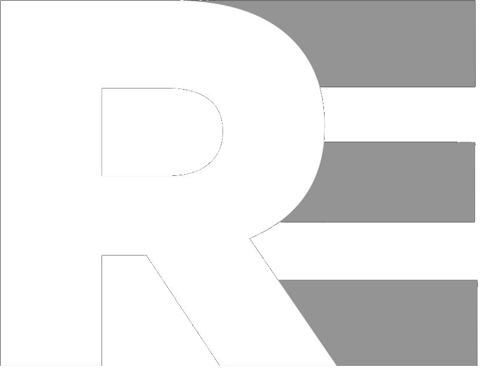

01
DevOps Quiz Bot
Telegram bot that generates and schedules daily DevOps quizzes.
GitHub ↗
$ whoami
I build reliable infrastructure, automate delivery pipelines and turn complex deployments into repeatable processes.
rengenk@linux:~$ kubectl get pods
NAME READY STATUS
api-7f8c9d7f6c 1/1 Running
worker-65ddc8c76 1/1 Running
postgres-0 1/1 Running
rengenk@linux:~$ docker ps
CONTAINER STATUS
nginx Up 14 days
prometheus Up 14 days
grafana Up 14 days
rengenk@linux:~$ terraform apply
Apply complete!01 / ABOUT
I'm a DevOps engineer focused on Linux infrastructure, containers, CI/CD and observability.
I enjoy automating repetitive operations, improving deployment reliability and building systems that are easy to understand and maintain.
02 / SKILLS
03 / PROJECTS
Telegram bot that generates and schedules daily DevOps quizzes.
GitHub ↗Infrastructure monitoring with metrics, dashboards and alerting.
GitHub ↗Automated build, test and deployment workflows for containerized services.
GitHub ↗Reproducible server configuration and infrastructure provisioning.
GitHub ↗04 / EXPERIENCE
Hands-on infrastructure, Linux, Docker, Kubernetes, monitoring and CI/CD projects
Project-based software engineering training with a strong systems and automation focus
Applied computer science
Information system and technology